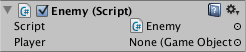

Controlling GameObjects using components
In the Unity Editor, you make changes to Component properties using the Inspector. So, for example, changes to the position values of the Transform Component will result in a change to the GameObject's position. Similarly, you can change the color of a Renderer's material or the mass of a Rigidbody with a corresponding effect on the appearance or behavior of the GameObject. For the most part, scripting is also about modifying Component properties to manipulate GameObjects. The difference, though, is that a script can vary a property's value gradually over time or in response to input from the user. By changing, creating and destroying objects at the right time, any kind of gameplay can be implemented.
Accessing components
The simplest and most common case is where a script needs access to other Components attached to the same GameObject. As mentioned in the Introduction section, a Component is actually an instance of a class so the first step is to get a reference to the Component instance you want to work with. This is done with the GetComponent function. Typically, you want to assign the Component object to a variable, which is done in C# using the following syntax:
void Start ()
{
Rigidbody rb = GetComponent<Rigidbody>();
}
Once you have a reference to a Component instance, you can set the values of its properties much as you would in the Inspector:
void Start ()
{
Rigidbody rb = GetComponent<Rigidbody>();
// Change the mass of the object's Rigidbody.
rb.mass = 10f;
}
An extra feature that is not available in the Inspector is the possibility of calling functions on Component instances:
void Start ()
{
Rigidbody rb = GetComponent<Rigidbody>();
// Add a force to the Rigidbody.
rb.AddForce(Vector3.up * 10f);
}
Note also that there is no reason why you can't have more than one custom script attached to the same object. If you need to access one script from another, you can use GetComponent as usual and just use the name of the script class (or the filename) to specify the Component type you want.
If you attempt to retrieve a Component that hasn't actually been added to the GameObject then GetComponent will return null; you will get a null reference error at runtime if you try to change any values on a null object.
Accessing other objects
Although they sometimes operate in isolation, it is common for scripts to keep track of other objects. For example, a pursuing enemy might need to know the position of the player. Unity provides a number of different ways to retrieve other objects, each appropriate to certain situations.
Linking GameObjects with variables
The most straightforward way to find a related GameObject is to add a public GameObject variable to the script:
public class Enemy : MonoBehaviour
{
public GameObject player;
// Other variables and functions...
}
This variable will be visible in the Inspector like any other:

You can now drag an object from the scene or Hierarchy panel onto this variable to assign it. The GetComponent function and Component access variables are available for this object as with any other, so you can use code like the following:
public class Enemy : MonoBehaviour {
public GameObject player;
void Start() {
// Start the enemy ten units behind the player character.
transform.position = player.transform.position - Vector3.forward * 10f;
}
}
Additionally, if declare a public variable of a Component type in your script, you can drag any GameObject that has that Component attached onto it. This will access the Component directly rather than the GameObject itself.
public Transform playerTransform;
Linking objects together with variables is most useful when you are dealing with individual objects that have permanent connections. You can use an array variable to link several objects of the same type, but the connections must still be made in the Unity editor rather than at runtime. It is often convenient to locate objects at runtime and Unity provides two basic ways to do this, as described below.
Finding child GameObjects
Sometimes, a game Scene makes use of a number of GameObjects of the same type, such as enemies, waypoints and obstacles. These may need to be tracked by a particular script that supervises or reacts to them (for example, all waypoints might need to be available to a pathfinding script). Using variables to link these GameObjects is a possibility but it makes the design process tedious if each new waypoint has to be dragged to a variable on a script. Likewise, if a waypoint is deleted, then it is a nuisance to have to remove the variable reference to the missing GameObject. In cases like this, it is often better to manage a set of GameObjects by making them all children of one parent GameObject. The child GameObjects can be retrieved using the parent's Transform component (because all GameObjects implicitly have a Transform):
using UnityEngine;
public class WaypointManager : MonoBehaviour {
public Transform[] waypoints;
void Start()
{
waypoints = new Transform[transform.childCount];
int i = 0;
foreach (Transform t in transform)
{
waypoints[i++] = t;
}
}
}
You can also locate a specific child object by name using the Transform.Find function:
transform.Find("Gun");
This can be useful when an object has a child that can be added and removed during gameplay. A weapon that can be picked up and put down is a good example of this.
Finding GameObjects by Name or Tag
It is always possible to locate GameObjects anywhere in the Scene hierarchy as long as you have some information to identify them. Individual objects can be retrieved by name using the GameObject.Find function:
GameObject player;
void Start()
{
player = GameObject.Find("MainHeroCharacter");
}
An object or a collection of objects can also be located by their tag using the GameObject.FindWithTag and GameObject.FindGameObjectsWithTag functions:-
GameObject player;
GameObject[] enemies;
void Start()
{
player = GameObject.FindWithTag("Player");
enemies = GameObject.FindGameObjectsWithTag("Enemy");
}